先看這裡：這份表能確定什麼、不能確定什麼
- repo 與 git 都沒有記錄「哪個模型畫的」：commit 只有日期與訊息，docs 內原本也沒有圖示清單。「繪製者」欄是我依對話紀錄推出來的。
- 11-18 這次對話裡重畫的 165 張：其中 151 張是主代理（當時 session 顯示 Opus 5.5）直接畫；其餘由子代理畫，子代理實際用哪個模型沒有被記錄。
- 目前查不到任何一張可以確定是 Sonnet 畫的。11-18 之前的圖來自更早的對話，模型沒有留下紀錄，一律標「未記錄」。若你記得哪幾天用 Sonnet，告訴我日期範圍，我可以用 git 的提交日期批次標出來。
Opus 5.5（主代理直接畫）
子代理＋Opus 小修
子代理畫（模型未記錄）
未記錄（舊對話）
非手繪點陣圖
已統一 2.5D
SVG 含描邊（
stroke）統一 2.5D 規格（已確認）
之後所有重畫都照這份規格，由 Opus 主代理直接畫（不派子代理，因為子代理的模型無法確定）。繪圖工具為共用的 Python 腳本 iso25d.py，同一套投影、色票與明暗規則產生 SVG，確保風格一致。
已統一的圖示（145 張）
建築・s=1.5
建築・s=1.5
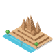
建築・s=1.5

大型動物・s=1.3
小動物／溫泉小景・s=1.0
大型動物・s=1.3
自然景觀・s=1.8
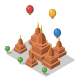
建築・s=1.5
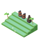
自然景觀・s=1.8
大型動物・s=1.3
建築・s=1.5

船／交通工具・s=1.6
自然景觀・s=1.8
建築・s=1.5
大型動物・s=1.3
人物・s=1.6
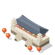
建築・s=1.5
小動物／溫泉小景・s=1.0
自然景觀・s=1.8
大型動物・s=1.3
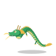
大型動物・s=1.3
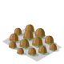
自然景觀・s=1.8
建築・s=1.5

人物・s=1.6
人物・s=1.6
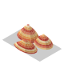
自然景觀・s=1.8
船／交通工具・s=1.6
建築・s=1.5

大型動物・s=1.3
大型動物・s=1.3
建築・s=1.5

建築・s=1.5
自然景觀・s=1.8
自然景觀・s=1.8
船／交通工具・s=1.6
自然景觀・s=1.8
小動物／溫泉小景・s=1.0
建築・s=1.5
大型動物・s=1.3
大型動物・s=1.3
自然景觀・s=1.8
建築・s=1.5
人物・s=1.6
小動物／溫泉小景・s=1.0
建築・s=1.5
自然景觀・s=1.8
建築・s=1.5
自然景觀・s=1.8
建築・s=1.5
建築・s=1.5
建築・s=1.5
自然景觀・s=1.8
自然景觀・s=1.8
建築・s=1.5
建築・s=1.5
船／交通工具・s=1.6
建築・s=1.5
小動物／溫泉小景・s=1.0

高塔／摩天樓・s=1.8
自然景觀・s=1.8
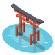
建築・s=1.5
小動物／溫泉小景・s=1.0
自然景觀・s=1.8
自然景觀・s=1.8
高塔／摩天樓・s=1.8
建築・s=1.5
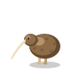
大型動物・s=1.3

建築・s=1.5
小動物／溫泉小景・s=1.0
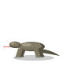
大型動物・s=1.3
建築・s=1.5
建築・s=1.5
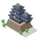
建築・s=1.5
自然景觀・s=1.8
自然景觀・s=1.8
小動物／溫泉小景・s=1.0
高塔／摩天樓・s=1.8
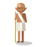
人物・s=1.6
大型動物・s=1.3
船／交通工具・s=1.6

高塔／摩天樓・s=1.8
大型動物・s=1.3
建築・s=1.5
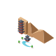
自然景觀・s=1.8
建築・s=1.5
建築・s=1.5
高塔／摩天樓・s=1.8
建築・s=1.5
建築・s=1.5
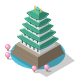
建築・s=1.5
建築・s=1.5
自然景觀・s=1.8
大型動物・s=1.3
高塔／摩天樓・s=1.8
建築・s=1.5
大型動物・s=1.3
建築・s=1.5
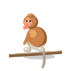
小動物／溫泉小景・s=1.0
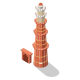
高塔／摩天樓・s=1.8
大型動物・s=1.3
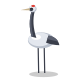
大型動物・s=1.3
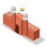
建築・s=1.5
大型動物・s=1.3
小動物／溫泉小景・s=1.0
建築・s=1.5
自然景觀・s=1.8
高塔／摩天樓・s=1.8
小動物／溫泉小景・s=1.0
船／交通工具・s=1.6
人物・s=1.6
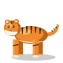
大型動物・s=1.3
船／交通工具・s=1.6
自然景觀・s=1.8

大型動物・s=1.3
建築・s=1.5
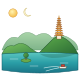
建築・s=1.5

人物・s=1.6
人物・s=1.6
建築・s=1.5
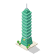
高塔／摩天樓・s=1.8
建築・s=1.5
建築・s=1.5
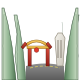
建築・s=1.5
船／交通工具・s=1.6
建築・s=1.5
建築・s=1.5
建築・s=1.5
小動物／溫泉小景・s=1.0
建築・s=1.5
高塔／摩天樓・s=1.8
船／交通工具・s=1.6
船／交通工具・s=1.6
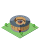
建築・s=1.5

船／交通工具・s=1.6
自然景觀・s=1.8
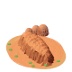
自然景觀・s=1.8
建築・s=1.5
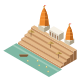
建築・s=1.5
自然景觀・s=1.8

建築・s=1.5
自然景觀・s=1.8
大型動物・s=1.3
人物・s=1.6
自然景觀・s=1.8
自然景觀・s=1.8
視角與光線
- 2.5D 等角視角：投影公式
P(x,y,z) = ((x−y)·cos30°, (x+y)·0.5 − z)，相當於從斜上方約 30° 看下去。每個物體都要看得到頂面、正面（+Y）、側面（+X），不畫純平面正視圖。 - 光源固定在左上方：頂面用亮色、正面用中間色、右側面用暗色；地面影子是一塊半透明色塊，往右下方偏移。
- 不描邊：SVG 內不得出現
stroke，輪廓只靠明暗色塊區分。 - 不用漸層加黑線：每個材質固定 3 階（亮／中／暗）純色塊分面；細節（窗、門、招牌）也用色塊。
地板
- 不必要的地板一律省略：建築、人物底下不再墊白色／石色的方形平台、雪地或人行道，物體直接站在地圖上，只留右下方的半透明影子。（11-20 已拿掉：鳥巢、海口騎樓、哈爾濱冰雪大世界、上海、香港、紫禁城、總統府、東京鐵塔、雷門、大皇宮、鄭王廟、雙子星塔、濱海灣金沙、舞龍、孔子的地板；同日第二批：七彩丹霞、蒲甘、福建土樓、白川鄉合掌村、巧克力山、阿里山小火車底下的草地／沙地方塊也拿掉。）
- 保留的例外：本身就是建築一部分的台基與階梯（故宮博物院、中正紀念堂、101 的裙樓），以及構成場景主體的地形與水面（山坡、湖面、河道，例如清水寺的山坡、月牙泉、桂林）。
- 大面積的白牆也要用柱樑分格（例如清水寺本堂的朱柱白壁），不要留一整塊白色。
動態
- 人物一定要有動作：至少一種循環動畫，例如孔子每 5 秒作揖鞠躬並點頭、舞龍的舞者跳步、K-pop 偶像與觀眾應援棒閃爍。多人或長條形的主體要錯開相位，讓動作像波浪傳下去（舞龍的龍身每一節依位置延遲 0.28 秒）。
- 動的是圖裡面的東西，不是整張圖：水上場景（桂林竹筏、下龍灣、龜船、紅帆船、西湖三潭、水豚溫泉、帝王蟹）的水面不動，船或動物在
<g>裡漂移，水面上擴散水波；地圖上這些圖示一律用mode: still，不再整張上下浮動。 - 會轉、會亮的地標就讓它轉、讓它亮：大阪環球影城的地球儀大陸在圓形裁切內由左往右自轉、大樓與燈籠燈光閃爍、煙與蒸氣往上飄。
- 動畫一律用 SVG SMIL（
animate/animateTransform），速度柔和（1–14 秒一輪），不描邊的規則一樣適用。
配色
- 摩天大樓群不要整片灰白：用彩色玻璃帷幕色票
glassT藍綠、glassB天藍、glassA琥珀、glassV淡紫、glassR珊瑚交錯搭配，並加橫向窗帶（上海、香港）。
市場居民（股市漲跌小人）
- 跟圖示同一套 2.5D 規則（光源左上、三階明暗、不描邊），由
gen_folk.py產生site/folk25.js。 - 每國三人：大人男、大人女、一個小孩（小孩 k=0.8）。中國：紅色唐裝＋瓜皮帽的爸爸、翠綠旗袍＋髮髻小花的媽媽、黃色唐裝＋熊貓帽的小朋友。
- 情緒跟著大盤：漲 → 雙手高舉歡呼、身旁星星（漲 2% 以上撒彩帶、上空放煙火）；跌 → 垂頭喪氣、塌肩、八字眉、嘆氣（跌 2% 以上冒冷汗、上空出現烏雲），頭頂不放烏雲、不哭。
- 上空的烏雲／煙火畫在
#wfx，疊在所有圖示上面（烏雲要蓋過 101 等地標），卡片所在的區域每幀挖空，不擋數值。
個別圖示可以再乘一個倍率 isoK（s = ISO_SCALE[iso] × isoK）：太魯閣、日月潭 0.66（跟阿里山小火車差不多大）、玉山 0.6、阿蘇火山與城山日出峰 0.8、無尾熊 0.66（要抱在尤加利樹上）、飛魚 0.45～0.5、海豚 0.7、衝浪手 0.6、變色龍 0.8、俄羅斯套娃 1.3、馬里亞納潛水艇與鮟鱇魚 0.8、十二使徒岩 0.8、古達明納塔 0.8。
畫布與地圖尺寸
- 畫布固定
viewBox="0 0 80 80"；內容自動縮放到 74×72 內，底部對齊 y=77（人物用較窄的 56×72，避免被拉太寬）。 - 地圖上的大小不再逐張手調
s，改在app.js的CRITTERS標上iso類別，由ISO_SCALE統一換算：
| iso 類別 | 用途 | s | 相對人物 |
|---|---|---|---|
person | 人物 | 1.6 | 1.00× |
building | 建築 | 1.5 | 0.94× |
tower | 高塔／摩天樓 | 1.8 | 1.12× |
nature | 自然景觀 | 1.8 | 1.12× |
vehicle | 船／交通工具 | 1.6 | 1.00× |
animal | 大型動物 | 1.3 | 0.81× |
small | 小動物／溫泉小景 | 1.0 | 0.62× |
第一版用人物 1.4、建築 2.2、高塔與自然 2.6，看起來人物偏小、建築過大，11-19 改為人物 1.8、建築 1.7、高塔與自然 2.0，再整體縮小約 10% 成為目前數值。11-19 重畫台灣、日本、南韓時，新增船／交通工具 1.6、大型動物 1.3、小動物／溫泉小景 1.0 三類。人物圖只佔畫布中間窄窄一條，建築會佔滿整個畫布寬度，所以 s 接近時，地圖上建築看起來仍比人物大約 1.5 倍。之後要微調，只改 ISO_SCALE 一行，全部同類圖示一起變。
固定色票（每種材質 亮／中／暗 三階）
stone roof red door green mount glass glassw water brick paint zinc crane cR cB cY wood steel sand jungle rock leaf trunk jade blueT marble gold black white pine fur night snow earth terra ice karst sandst orange pink grey glassT glassB glassA glassV glassR 新材質要加入色票時，同樣給三階，並保持與現有色相同的飽和度範圍（偏柔和、不用螢光色）。
全部圖示（372 個檔案）
| 縮圖 | 檔案 | 名稱 | 類別 | 最後修改 | 修改次數 | 描邊數 | 動畫 | viewBox | 繪製者 | 2.5D 統一 |
|---|---|---|---|---|---|---|---|---|---|---|
critters/abraham-lincoln.svg | 🎩 亞伯拉罕·林肯 | 人物文化 | 11-11 | 1 | 16 | 有 | 0 0 80 80 | 未記錄（11-18 之前的舊對話） | 未統一 | |
 | critters/abu-simbel.svg | 🗿 阿布辛貝神殿 | 世界地標 | 11-10 | 2 | 17 | 有 | 0 0 80 80 | 未記錄（11-18 之前的舊對話） | 未統一 |
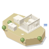 | critters/acropolis.svg | 🏛️ 雅典衛城 | 世界地標 | 11-07 | 1 | 12 | 0 0 128 128 | 未記錄（11-18 之前的舊對話） | 未統一 | |
critters/albert-einstein.svg | 🧠 愛因斯坦 | 歷史人物 | 11-18 | 2 | 14 | 有 | 0 0 80 80 | Opus 5.5（主代理直接畫） | 未統一 | |
critters/alhambra.svg | 🕌 阿爾罕布拉宮 | 世界地標 | 11-10 | 2 | 27 | 有 | 0 0 80 80 | 未記錄（11-18 之前的舊對話） | 未統一 | |
critters/alishan-train.svg | 🚂 阿里山森林小火車 | 世界地標 | 11-20 | 4 | 0 | 有 | 0 0 80 80 | Opus 5.5（主代理直接畫，2.5D 工具） | ✓ 已統一（建築） | |
 | critters/amazon-boat.svg | 🚤 亞馬遜河探險船 | 人物文化 | 11-07 | 1 | 11 | 0 0 128 128 | 未記錄（11-18 之前的舊對話） | 未統一 | |
critters/amazon-rainforest.svg | 🌳 亞馬遜雨林 | 世界地標 | 11-18 | 4 | 12 | 有 | 0 0 80 80 | 子代理畫＋Opus 5.5 小修 | 未統一 | |
critters/amber-fort.svg | 🏰 琥珀堡 | 世界地標 | 未提交 | 0 | 0 | 有 | 0 0 80 80 | Opus 5.5（主代理直接畫，2.5D 工具） | ✓ 已統一（建築） | |
critters/american-bison.svg | 🦬 美洲野牛 | 動物 | 11-11 | 2 | 12 | 0 0 80 80 | 未記錄（11-18 之前的舊對話） | 未統一 | ||
critters/angel-falls.svg | 💧 安赫爾瀑布 | 自然奇觀 | 11-10 | 2 | 14 | 有 | 0 0 80 80 | 未記錄（11-18 之前的舊對話） | 未統一 | |
critters/angkor-wat.svg | 🛕 吳哥窟 | 世界地標 | 11-19 | 3 | 0 | 0 0 80 80 | Opus 5.5（主代理直接畫，2.5D 工具） | ✓ 已統一（建築） | ||
| critters/anglerfish.svg | 🎣 深海鮟鱇魚 | 海洋生物 | 11-20 | 2 | 0 | 有 | 0 0 80 80 | Opus 5.5（主代理直接畫，2.5D 工具） | ✓ 已統一（大型動物） |
critters/aomori-apple.svg | 🍎 青森蘋果 | 美食 | 11-20 | 1 | 0 | 有 | 0 0 80 80 | Opus 5.5（主代理直接畫，2.5D 工具） | ✓ 已統一（小動物／溫泉小景） | |
critters/arc-de-triomphe.svg | 🏛️ 凱旋門 | 世界地標 | 11-10 | 1 | 15 | 有 | 0 0 80 80 | 未記錄（11-18 之前的舊對話） | 未統一 | |
critters/arctic-fox.svg | 🦊 北極狐 | 動物 | 11-20 | 2 | 0 | 有 | 0 0 80 80 | Opus 5.5（主代理直接畫，2.5D 工具） | ✓ 已統一（大型動物） | |
critters/aristotle.svg | 📖 亞里斯多德 | 歷史人物 | 11-11 | 1 | 15 | 有 | 0 0 80 80 | 未記錄（11-18 之前的舊對話） | 未統一 | |
critters/aso-volcano.svg | 🌋 阿蘇火山 | 自然景觀 | 11-20 | 1 | 0 | 有 | 0 0 80 80 | Opus 5.5（主代理直接畫，2.5D 工具） | ✓ 已統一（自然景觀） | |
critters/atlantis.svg | 🏛️ 亞特蘭提斯 | 神秘之地 | 11-10 | 2 | 21 | 有 | 0 0 80 80 | 未記錄（11-18 之前的舊對話） | 未統一 | |
critters/babe-ruth.svg | ⚾ 貝比·魯斯 | 體育／棒球 | 11-11 | 1 | 14 | 有 | 0 0 80 80 | 未記錄（11-18 之前的舊對話） | 未統一 | |
critters/bagan.svg | 🏯 蒲甘佛塔群 | 世界地標 | 11-20 | 4 | 0 | 有 | 0 0 80 80 | Opus 5.5（主代理直接畫，2.5D 工具） | ✓ 已統一（建築） | |
critters/bali.svg | 🌋 峇里島 | 世界地標 | 11-19 | 3 | 0 | 0 0 80 80 | Opus 5.5（主代理直接畫，2.5D 工具） | ✓ 已統一（自然景觀） | ||
critters/banff.svg | 🏔️ 班夫國家公園（加拿大） | 國家公園 | 11-18 | 2 | 12 | 有 | 0 0 128 128 | 子代理畫（模型未記錄；當時主代理為 Opus 5.5） | 未統一 | |
critters/baobab.svg | 🌳 猴麵包樹 | 自然奇觀 | 11-07 | 1 | 3 | 0 0 128 128 | 未記錄（11-18 之前的舊對話） | 未統一 | ||
critters/barcelos-rooster.svg | 🐓 巴塞盧什公雞 | 人物文化 | 11-10 | 2 | 25 | 有 | 0 0 80 80 | 未記錄（11-18 之前的舊對話） | 未統一 | |
 | critters/beaver.svg | 🦫 海狸 | 動物 | 11-10 | 1 | 16 | 有 | 0 0 80 80 | 未記錄（11-18 之前的舊對話） | 未統一 |
critters/beethoven.svg | 🎼 貝多芬 | 人物文化 | 11-11 | 1 | 14 | 有 | 0 0 80 80 | 未記錄（11-18 之前的舊對話） | 未統一 | |
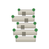 | critters/beirut-terraces.svg | 🏢 貝魯特垂直森林 | 世界地標 | 11-17 | 1 | 6 | 0 0 80 80 | 未記錄（11-18 之前的舊對話） | 未統一 | |
critters/bengal-tiger.svg | 🐅 孟加拉虎 | 動物 | 11-20 | 1 | 0 | 有 | 0 0 80 80 | Opus 5.5（主代理直接畫，2.5D 工具） | ✓ 已統一（大型動物） | |
critters/berlin-wall.svg | 🧱 柏林圍牆 | 歷史 | 11-10 | 2 | 19 | 有 | 0 0 80 80 | 未記錄（11-18 之前的舊對話） | 未統一 | |
 | critters/bermuda.svg | 🔺 百慕達三角 | 神秘之地 | 11-10 | 2 | 6 | 有 | 0 0 128 128 | 未記錄（11-18 之前的舊對話） | 未統一 |
critters/big-ben.svg | 🕰️ 大笨鐘 | 世界地標 | 11-10 | 2 | 28 | 0 0 80 80 | 未記錄（11-18 之前的舊對話） | 未統一 | ||
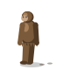 | critters/bigfoot.svg | 🦶 大腳怪 | 傳說生物 | 11-10 | 1 | 20 | 有 | 0 0 80 80 | 未記錄（11-18 之前的舊對話） | 未統一 |
critters/bill-gates.svg | 💻 比爾‧蓋茲 | 人物文化 | 11-11 | 1 | 15 | 有 | 0 0 80 80 | 未記錄（11-18 之前的舊對話） | 未統一 | |
critters/birds-nest.svg | 🏟️ 北京國家體育場 | 世界地標 | 11-20 | 4 | 0 | 有 | 0 0 80 80 | Opus 5.5（主代理直接畫，2.5D 工具） | ✓ 已統一（建築） | |
| critters/black-ship.svg | ⚓ 日本黑船 | 歷史 | 11-20 | 3 | 0 | 有 | 0 0 80 80 | Opus 5.5（主代理直接畫，2.5D 工具） | ✓ 已統一（船／交通工具） |
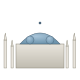 | critters/blue-mosque.svg | 🕌 伊斯坦堡歷史區 | 世界地標 | 11-17 | 1 | 5 | 0 0 80 80 | 未記錄（11-18 之前的舊對話） | 未統一 | |
critters/boracay.svg | 🏖️ 長灘島 | 世界地標 | 11-19 | 2 | 0 | 0 0 80 80 | Opus 5.5（主代理直接畫，2.5D 工具） | ✓ 已統一（自然景觀） | ||
critters/borobudur.svg | 🛕 婆羅浮屠 | 世界地標 | 11-19 | 3 | 0 | 0 0 80 80 | Opus 5.5（主代理直接畫，2.5D 工具） | ✓ 已統一（建築） | ||
critters/bosco-verticale.svg | 🏢 米蘭垂直森林 | 世界地標 | 11-17 | 1 | 3 | 0 0 80 80 | 未記錄（11-18 之前的舊對話） | 未統一 | ||
critters/bran-castle.svg | 🏰 布蘭城堡 | 世界地標 | 11-10 | 1 | 23 | 有 | 0 0 80 80 | 未記錄（11-18 之前的舊對話） | 未統一 | |
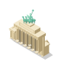 | critters/brandenburg-gate.svg | 🏛️ 布蘭登堡門 | 世界地標 | 11-10 | 1 | 9 | 有 | 0 0 80 80 | 未記錄（11-18 之前的舊對話） | 未統一 |
critters/brown-bear.svg | 🐻 棕熊 | 動物 | 11-20 | 2 | 0 | 有 | 0 0 80 80 | Opus 5.5（主代理直接畫，2.5D 工具） | ✓ 已統一（大型動物） | |
 | critters/budapest-parliament.svg | 🏛️ 布達佩斯國會大廈 | 世界地標 | 11-17 | 1 | 5 | 0 0 80 80 | 未記錄（11-18 之前的舊對話） | 未統一 | |
critters/buddha-siddhartha.svg | 🪷 釋迦牟尼 | 人物文化 | 11-20 | 2 | 0 | 有 | 0 0 80 80 | Opus 5.5（主代理直接畫，2.5D 工具） | ✓ 已統一（人物） | |
 | critters/buenos-aires-obelisk.svg | 🗼 布宜諾斯艾利斯方尖碑 | 世界地標 | 11-16 | 1 | 5 | 0 0 80 80 | 未記錄（11-18 之前的舊對話） | 未統一 | |
critters/bulguksa.svg | 🛕 佛國寺 | 世界地標 | 11-20 | 1 | 0 | 有 | 0 0 80 80 | Opus 5.5（主代理直接畫，2.5D 工具） | ✓ 已統一（建築） | |
critters/burj-al-arab.svg | 🏨 帆船飯店 | 世界地標 | 11-10 | 1 | 5 | 有 | 0 0 80 80 | 未記錄（11-18 之前的舊對話） | 未統一 | |
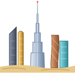 | critters/burj-khalifa.svg | 🏗️ 哈里發塔 | 世界地標 | 11-18 | 2 | 12 | 有 | 0 0 128 128 | Opus 5.5（主代理直接畫） | 未統一 |
critters/cactus-mexico.svg | 🌵 墨西哥仙人掌 | 自然奇觀 | 11-07 | 1 | 10 | 0 0 128 128 | 未記錄（11-18 之前的舊對話） | 未統一 | ||
critters/camel-caravan.svg | 🐪 撒哈拉駱駝商隊 | 人物文化 | 11-07 | 2 | 4 | 0 6 200 86 | 未記錄（11-18 之前的舊對話） | 未統一 | ||
critters/capybara-onsen.svg | ♨️ 水豚泡溫泉 | 動物 | 11-19 | 3 | 0 | 有 | 0 0 80 80 | Opus 5.5（主代理直接畫，2.5D 工具） | ✓ 已統一（小動物／溫泉小景） | |
 | critters/caravel-dias.svg | 🏴 迪亞士的輕快帆船 | 歷史 | 11-07 | 1 | 7 | 0 0 128 128 | 未記錄（11-18 之前的舊對話） | 未統一 | |
critters/carp-island.svg | 🌌 星象島 | 世界地標 | 11-20 | 2 | 0 | 有 | 0 0 80 80 | Opus 5.5（主代理直接畫，2.5D 工具） | ✓ 已統一（自然景觀） | |
critters/chameleon.svg | 🦎 變色龍 | 動物 | 11-20 | 4 | 0 | 有 | 0 0 80 80 | Opus 5.5（主代理直接畫，2.5D 工具） | ✓ 已統一（大型動物） | |
 | critters/chartres-cathedral.svg | ⛪ 沙特爾大教堂 | 世界地標 | 11-18 | 2 | 39 | 有 | 0 0 80 80 | 子代理畫（模型未記錄；當時主代理為 Opus 5.5） | 未統一 |
critters/chernobyl.svg | ☢️ 車諾比核電廠 | 歷史 | 11-10 | 2 | 29 | 有 | 0 0 80 80 | 未記錄（11-18 之前的舊對話） | 未統一 | |
 | critters/chichen-itza.svg | 🔺 奇琴伊察 | 世界地標 | 11-07 | 1 | 11 | 0 0 128 128 | 未記錄（11-18 之前的舊對話） | 未統一 | |
critters/chinese-dragon.svg | 🐉 中國龍 | 動物 | 11-19 | 1 | 0 | 0 0 80 80 | Opus 5.5（主代理直接畫，2.5D 工具） | ✓ 已統一（大型動物） | ||
critters/chocolate-hills.svg | ⛰️ 巧克力山 | 自然景觀 | 11-20 | 5 | 0 | 0 0 80 80 | Opus 5.5（主代理直接畫，2.5D 工具） | ✓ 已統一（自然景觀） | ||
critters/christ-redeemer.svg | ✝️ 基督像 | 世界地標 | 11-10 | 2 | 14 | 0 0 80 80 | 未記錄（11-18 之前的舊對話） | 未統一 | ||
critters/chupacabra.svg | 👽 卓柏卡布拉 | 傳說生物 | 11-10 | 2 | 9 | 有 | 0 0 80 80 | 未記錄（11-18 之前的舊對話） | 未統一 | |
critters/cks-memorial-hall.svg | 🏛 中正紀念堂 | 世界地標 | 11-19 | 2 | 0 | 0 0 80 80 | Opus 5.5（主代理直接畫，2.5D 工具） | ✓ 已統一（建築） | ||
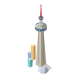 | critters/cn-tower.svg | 📡 西恩塔 | 世界地標 | 11-07 | 1 | 9 | 有 | 0 0 128 128 | 未記錄（11-18 之前的舊對話） | 未統一 |
critters/colosseum.svg | 🏟️ 羅馬競技場 | 世界地標 | 11-18 | 3 | 113 | 0 0 80 80 | 子代理畫（模型未記錄；當時主代理為 Opus 5.5） | 未統一 | ||
critters/colossus-rhodes.svg | 🗿 羅德島巨像 | 歷史 | 11-10 | 2 | 23 | 有 | 0 0 80 80 | 未記錄（11-18 之前的舊對話） | 未統一 | |
| critters/confucius.svg | 📜 孔子 | 歷史人物 | 11-20 | 3 | 0 | 有 | 0 0 80 80 | Opus 5.5（主代理直接畫，2.5D 工具） | ✓ 已統一（人物） |
critters/dalai-lama.svg | 🙏 達賴喇嘛 | 人物文化 | 11-20 | 2 | 0 | 有 | 0 0 80 80 | Opus 5.5（主代理直接畫，2.5D 工具） | ✓ 已統一（人物） | |
critters/danxia.svg | 🌈 七彩丹霞 | 自然奇觀 | 11-20 | 3 | 0 | 0 0 80 80 | Opus 5.5（主代理直接畫，2.5D 工具） | ✓ 已統一（自然景觀） | ||
critters/darvaza-crater.svg | 🔥 地獄之門 | 世界地標 | 11-18 | 2 | 5 | 有 | 0 0 80 80 | 子代理畫（模型未記錄；當時主代理為 Opus 5.5） | 未統一 | |
critters/dead-sea.svg | 🏊 死海 | 世界地標 | 11-10 | 2 | 13 | 有 | 0 0 80 80 | 未記錄（11-18 之前的舊對話） | 未統一 | |
critters/dhow.svg | ⛵ 阿拉伯三角帆船 | 歷史 | 11-20 | 2 | 0 | 有 | 0 0 80 80 | Opus 5.5（主代理直接畫，2.5D 工具） | ✓ 已統一（船／交通工具） | |
critters/djenne-mosque.svg | 🕌 傑內大清真寺 | 世界地標 | 11-10 | 1 | 15 | 有 | 0 0 80 80 | 未記錄（11-18 之前的舊對話） | 未統一 | |
critters/dogo-onsen.svg | ♨️ 道後溫泉本館 | 世界地標 | 11-20 | 1 | 0 | 有 | 0 0 80 80 | Opus 5.5（主代理直接畫，2.5D 工具） | ✓ 已統一（建築） | |
| critters/dolphin.png | 10-21 | 1 | 點陣圖 | Opus 5.5（主代理直接畫，2.5D 工具） | ✓ 已統一（大型動物） | ||||
critters/dolphin.svg | 🐬 猴子米亞野生海豚 | 海洋生物 | 11-20 | 1 | 0 | 有 | 0 0 80 80 | Opus 5.5（主代理直接畫，2.5D 工具） | ✓ 已統一（大型動物） | |
critters/dotonbori-glico.svg | 🏃 道頓堀固力果看板 | 世界地標 | 11-20 | 1 | 0 | 有 | 0 0 80 80 | Opus 5.5（主代理直接畫，2.5D 工具） | ✓ 已統一（建築） | |
critters/double-decker-bus.svg | 🚌 紅色雙層巴士 | 人物文化 | 11-10 | 1 | 28 | 有 | 0 0 80 80 | 未記錄（11-18 之前的舊對話） | 未統一 | |
| critters/dragon-dance.svg | 🐉 舞龍 | 人物文化 | 11-20 | 3 | 0 | 有 | 0 0 80 80 | Opus 5.5（主代理直接畫，2.5D 工具） | ✓ 已統一（建築） |
 | critters/eiffel-tower.svg | 🗼 艾菲爾鐵塔 | 世界地標 | 11-10 | 2 | 17 | 0 0 80 80 | 未記錄（11-18 之前的舊對話） | 未統一 | |
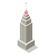 | critters/empire-state.svg | 🏢 帝國大廈 | 世界地標 | 11-11 | 2 | 9 | 有 | 0 0 80 80 | 未記錄（11-18 之前的舊對話） | 未統一 |
critters/eucalyptus.svg | 🌿 尤加利樹 | 自然奇觀 | 11-20 | 2 | 0 | 有 | 0 0 80 80 | Opus 5.5（主代理直接畫，2.5D 工具） | ✓ 已統一（自然景觀） | |
critters/everest.svg | 🏔️ 聖母峰 | 自然奇觀 | 11-20 | 5 | 0 | 有 | 0 0 80 80 | Opus 5.5（主代理直接畫，2.5D 工具） | ✓ 已統一（自然景觀） | |
critters/evergreen-container-ship.svg | 🚢 長榮海運貨櫃輪 | 船艦 | 11-19 | 2 | 0 | 有 | 0 0 80 80 | Opus 5.5（主代理直接畫，2.5D 工具） | ✓ 已統一（船／交通工具） | |
critters/eye-of-sahara.svg | 👁️ 撒哈拉之眼 | 世界地標 | 11-10 | 2 | 8 | 有 | 0 0 80 80 | 未記錄（11-18 之前的舊對話） | 未統一 | |
critters/fallingwater.svg | 🏡 流水別墅 | 世界地標 | 11-18 | 2 | 17 | 有 | 0 0 80 80 | 子代理畫（模型未記錄；當時主代理為 Opus 5.5） | 未統一 | |
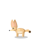 | critters/fennec-fox.svg | 🦊 耳廓狐 | 動物 | 11-11 | 4 | 19 | 有 | 0 0 80 80 | 未記錄（11-18 之前的舊對話） | 未統一 |
critters/fiordland.svg | 🏞️ 峽灣國家公園（紐西蘭） | 國家公園 | 11-20 | 3 | 0 | 有 | 0 0 80 80 | Opus 5.5（主代理直接畫，2.5D 工具） | ✓ 已統一（自然景觀） | |
 | critters/fish.png | 10-21 | 1 | 點陣圖 | 非手繪（Fluent Emoji 點陣圖） | 未統一 | ||||
critters/fleet-columbus.svg | 🌎 哥倫布船隊 | 歷史 | 11-07 | 1 | 4 | 0 0 128 128 | 未記錄（11-18 之前的舊對話） | 未統一 | ||
 | critters/florence-dome.svg | ⛪ 布魯內萊斯基穹頂 | 世界地標 | 11-17 | 1 | 5 | 0 0 80 80 | 未記錄（11-18 之前的舊對話） | 未統一 | |
critters/flying-dutchman.svg | 👻 飛翔的荷蘭人 | 傳說生物 | 11-07 | 1 | 3 | 0 0 128 128 | 未記錄（11-18 之前的舊對話） | 未統一 | ||
critters/flying-fish.svg | 🐟 飛魚 | 海洋生物 | 11-20 | 3 | 0 | 有 | 0 0 80 80 | Opus 5.5（主代理直接畫，2.5D 工具） | ✓ 已統一（小動物／溫泉小景） | |
critters/footballer-brazil.svg | ⚽ 球王比利 | 人物文化 | 11-07 | 1 | 9 | 有 | 0 0 128 128 | 未記錄（11-18 之前的舊對話） | 未統一 | |
critters/forbidden-city.svg | 🏯 北京故宮・太和殿 | 世界地標 | 11-20 | 5 | 0 | 有 | 0 0 80 80 | Opus 5.5（主代理直接畫，2.5D 工具） | ✓ 已統一（建築） | |
critters/formosan-black-bear.svg | 🐻 台灣黑熊 | 動物 | 11-19 | 4 | 0 | 0 0 80 80 | Opus 5.5（主代理直接畫，2.5D 工具） | ✓ 已統一（大型動物） | ||
critters/formosan-sika-deer.svg | 🦌 台灣梅花鹿 | 動物 | 11-19 | 2 | 0 | 0 0 80 80 | Opus 5.5（主代理直接畫，2.5D 工具） | ✓ 已統一（大型動物） | ||
critters/fram-polar-ship.svg | 🧊 極地探險船・前進號 | 船艦 | 11-11 | 1 | 9 | 有 | 0 0 80 80 | 未記錄（11-18 之前的舊對話） | 未統一 | |
critters/fuji.svg | 🗻 富士山 | 世界地標 | 11-19 | 4 | 0 | 0 0 80 80 | Opus 5.5（主代理直接畫，2.5D 工具） | ✓ 已統一（自然景觀） | ||
critters/galapagos.svg | 🐢 加拉巴哥國家公園（厄瓜多） | 國家公園 | 11-07 | 1 | 7 | 有 | 0 0 128 128 | 未記錄（11-18 之前的舊對話） | 未統一 | |
critters/galleon-manila.svg | 💰 馬尼拉大帆船 | 歷史 | 11-07 | 1 | 4 | 0 0 128 128 | 未記錄（11-18 之前的舊對話） | 未統一 | ||
critters/gassho-house.svg | 🏠 白川鄉合掌村 | 世界地標 | 11-20 | 5 | 0 | 0 0 80 80 | Opus 5.5（主代理直接畫，2.5D 工具） | ✓ 已統一（建築） | ||
critters/gaucho.svg | 🤠 高卓人 | 人物文化 | 11-10 | 1 | 15 | 有 | 0 0 80 80 | 未記錄（11-18 之前的舊對話） | 未統一 | |
critters/genghis-khan.svg | 🏹 成吉思汗 | 人物文化 | 11-20 | 2 | 0 | 有 | 0 0 80 80 | Opus 5.5（主代理直接畫，2.5D 工具） | ✓ 已統一（人物） | |
critters/giants-causeway.svg | ⬡ 巨人堤道 | 自然奇觀 | 11-18 | 3 | 147 | 有 | 0 0 80 80 | 子代理畫（模型未記錄；當時主代理為 Opus 5.5） | 未統一 | |
 | critters/giraffe.png | 🦒 長頸鹿 | 動物 | 10-21 | 1 | 點陣圖 | 非手繪（Fluent Emoji 點陣圖） | 未統一 | ||
critters/golden-gate.svg | 🌉 金門大橋 | 世界地標 | 11-07 | 1 | 5 | 有 | 0 0 128 128 | 未記錄（11-18 之前的舊對話） | 未統一 | |
critters/golden-monkey.svg | 🐵 金絲猴 | 動物 | 11-19 | 3 | 0 | 0 0 80 80 | Opus 5.5（主代理直接畫，2.5D 工具） | ✓ 已統一（小動物／溫泉小景） | ||
critters/grand-canyon.svg | 🏜️ 大峽谷 | 自然奇觀 | 11-07 | 1 | 3 | 0 0 128 128 | 未記錄（11-18 之前的舊對話） | 未統一 | ||
critters/grand-palace.svg | 🏯 大皇宮與玉佛寺 | 世界地標 | 11-20 | 3 | 0 | 0 0 80 80 | Opus 5.5（主代理直接畫，2.5D 工具） | ✓ 已統一（建築） | ||
critters/great-barrier-reef.svg | 🐢 大堡礁 | 自然奇觀 | 11-20 | 3 | 0 | 有 | 0 0 80 80 | Opus 5.5（主代理直接畫，2.5D 工具） | ✓ 已統一（自然景觀） | |
critters/great-blue-hole.svg | 🔵 貝里斯大藍洞 | 自然奇觀 | 11-10 | 2 | 17 | 有 | 0 0 80 80 | 未記錄（11-18 之前的舊對話） | 未統一 | |
critters/great-wall.svg | 🧱 萬里長城 | 世界地標 | 11-19 | 5 | 0 | 0 0 80 80 | Opus 5.5（主代理直接畫，2.5D 工具） | ✓ 已統一（建築） | ||
critters/greek-house.svg | 🏝️ 聖托里尼 | 世界地標 | 11-10 | 2 | 12 | 0 0 80 80 | 未記錄（11-18 之前的舊對話） | 未統一 | ||
critters/greek-trireme.svg | ⚔️ 希臘三列槳座戰船 | 船艦 | 11-11 | 1 | 14 | 有 | 0 0 80 80 | 未記錄（11-18 之前的舊對話） | 未統一 | |
critters/grizzly-salmon.svg | 🐻 阿拉斯加灰熊抓鮭魚 | 動物 | 11-10 | 2 | 23 | 有 | 0 0 80 80 | 未記錄（11-18 之前的舊對話） | 未統一 | |
critters/guggenheim-bilbao.svg | 🏛️ 畢爾包古根漢美術館 | 世界地標 | 11-18 | 2 | 15 | 有 | 0 0 80 80 | Opus 5.5（主代理直接畫） | 未統一 | |
critters/guggenheim-nyc.svg | 🏛️ 古根漢美術館 | 世界地標 | 11-18 | 2 | 11 | 0 0 80 80 | Opus 5.5（主代理直接畫） | 未統一 | ||
critters/guilin-karst.svg | ⛰️ 桂林山水與竹筏 | 世界地標 | 11-19 | 4 | 0 | 有 | 0 0 80 80 | Opus 5.5（主代理直接畫，2.5D 工具） | ✓ 已統一（自然景觀） | |
critters/gyeongbokgung.svg | 🏯 景福宮 | 世界地標 | 11-19 | 3 | 0 | 0 0 80 80 | Opus 5.5（主代理直接畫，2.5D 工具） | ✓ 已統一（建築） | ||
critters/haedong-yonggungsa.svg | 🌊 海東龍宮寺 | 世界地標 | 11-20 | 1 | 0 | 有 | 0 0 80 80 | Opus 5.5（主代理直接畫，2.5D 工具） | ✓ 已統一（建築） | |
 | critters/hagia-sophia.svg | 🕌 聖索菲亞大教堂 | 世界地標 | 11-18 | 2 | 12 | 0 0 80 80 | Opus 5.5（主代理直接畫） | 未統一 | |
critters/haikou-arcade-street.svg | 🏘️ 海口騎樓老街 | 世界地標 | 11-20 | 3 | 0 | 0 0 80 80 | Opus 5.5（主代理直接畫，2.5D 工具） | ✓ 已統一（建築） | ||
critters/hakodate-night-view.svg | 🚡 函館山夜景纜車 | 世界地標 | 11-19 | 3 | 0 | 有 | 0 0 80 80 | Opus 5.5（主代理直接畫，2.5D 工具） | ✓ 已統一（自然景觀） | |
critters/halong-bay.svg | ⛵ 下龍灣 | 自然奇觀 | 11-19 | 4 | 0 | 有 | 0 0 80 80 | Opus 5.5（主代理直接畫，2.5D 工具） | ✓ 已統一（自然景觀） | |
critters/hanging-gardens.svg | 🌺 巴比倫空中花園 | 世界奇蹟 | 11-07 | 1 | 4 | 0 0 128 128 | 未記錄（11-18 之前的舊對話） | 未統一 | ||
critters/harbin-ice-world.svg | 🧊 哈爾濱冰雪大世界 | 世界地標 | 11-20 | 4 | 0 | 有 | 0 0 80 80 | Opus 5.5（主代理直接畫，2.5D 工具） | ✓ 已統一（建築） | |
critters/hawa-mahal.svg | 🏯 風之宮 | 世界地標 | 未提交 | 0 | 0 | 有 | 0 0 80 80 | Opus 5.5（主代理直接畫，2.5D 工具） | ✓ 已統一（建築） | |
critters/hippo.svg | 🦛 河馬 | 動物 | 11-10 | 2 | 11 | 有 | 0 0 80 80 | 未記錄（11-18 之前的舊對話） | 未統一 | |
critters/hk-junk-boat.svg | ⛵ 中式紅帆船 | 人物文化 | 11-19 | 3 | 0 | 有 | 0 0 80 80 | Opus 5.5（主代理直接畫，2.5D 工具） | ✓ 已統一（船／交通工具） | |
critters/hobbiton.svg | 🏡 哈比村 | 世界地標 | 11-20 | 2 | 0 | 有 | 0 0 80 80 | Opus 5.5（主代理直接畫，2.5D 工具） | ✓ 已統一（建築） | |
critters/hokkaido-king-crab.svg | 🦀 北海道帝王蟹 | 動物 | 11-19 | 3 | 0 | 有 | 0 0 80 80 | Opus 5.5（主代理直接畫，2.5D 工具） | ✓ 已統一（小動物／溫泉小景） | |
critters/hollywood-sign.svg | 🎬 好萊塢標誌 | 世界地標 | 11-10 | 1 | 5 | 有 | 0 0 80 80 | 未記錄（11-18 之前的舊對話） | 未統一 | |
| critters/hongkong-skyline.svg | 🏙️ 香港摩天大樓群 | 世界地標 | 11-20 | 5 | 0 | 有 | 0 0 80 80 | Opus 5.5（主代理直接畫，2.5D 工具） | ✓ 已統一（高塔／摩天樓） |
critters/hot-balloon.svg | 🎈 卡帕多奇亞熱氣球 | 自然奇觀 | 11-10 | 2 | 29 | 有 | 0 0 80 80 | 未記錄（11-18 之前的舊對話） | 未統一 | |
critters/houston-space.svg | 🚀 休士頓詹森太空中心 | 科技 | 11-10 | 2 | 8 | 0 0 128 128 | 未記錄（11-18 之前的舊對話） | 未統一 | ||
critters/huangshan-pine.svg | 🌲 黃山迎客松 | 自然奇觀 | 11-19 | 3 | 0 | 0 0 80 80 | Opus 5.5（主代理直接畫，2.5D 工具） | ✓ 已統一（自然景觀） | ||
 | critters/hunter.png | 🏹 莽原獵人 | 人物文化 | 10-21 | 1 | 點陣圖 | 非手繪（Fluent Emoji 點陣圖） | 未統一 | ||
critters/iceberg.svg | 🧊 南大洋冰山 | 世界地標 | 11-10 | 1 | 4 | 有 | 0 0 80 80 | 未記錄（11-18 之前的舊對話） | 未統一 | |
critters/iceland-volcano.svg | 🌋 冰島小火山 | 自然奇觀 | 11-10 | 2 | 3 | 有 | 0 0 128 128 | 未記錄（11-18 之前的舊對話） | 未統一 | |
critters/iguazu.svg | 🌈 伊瓜蘇國家公園（阿根廷／巴西） | 國家公園 | 11-18 | 2 | 23 | 有 | 0 0 128 128 | 子代理畫（模型未記錄；當時主代理為 Opus 5.5） | 未統一 | |
critters/isaac-newton.svg | 🍎 伊薩克·牛頓 | 歷史人物 | 11-11 | 1 | 14 | 有 | 0 0 80 80 | 未記錄（11-18 之前的舊對話） | 未統一 | |
critters/itsukushima-torii.svg | ⛩️ 嚴島神社大鳥居 | 世界地標 | 11-19 | 3 | 0 | 有 | 0 0 80 80 | Opus 5.5（主代理直接畫，2.5D 工具） | ✓ 已統一（建築） | |
critters/jaguar.svg | 🐆 美洲豹 | 動物 | 11-10 | 2 | 14 | 有 | 0 0 80 80 | 未記錄（11-18 之前的舊對話） | 未統一 | |
critters/japanese-macaque-onsen.svg | 🐒 日本獼猴泡溫泉 | 動物 | 11-19 | 4 | 0 | 有 | 0 0 80 80 | Opus 5.5（主代理直接畫，2.5D 工具） | ✓ 已統一（小動物／溫泉小景） | |
critters/jellyfish.svg | 帛琉水母湖 | 自然奇觀 | 11-20 | 3 | 0 | 有 | 0 0 80 80 | Opus 5.5（主代理直接畫，2.5D 工具） | ✓ 已統一（自然景觀） | |
critters/jesus-christ.svg | ✝️ 耶穌 | 人物文化 | 11-11 | 1 | 11 | 有 | 0 0 80 80 | 未記錄（11-18 之前的舊對話） | 未統一 | |
critters/jiuzhaigou.svg | 🏞️ 九寨溝 | 自然景觀 | 11-20 | 1 | 0 | 有 | 0 0 80 80 | Opus 5.5（主代理直接畫，2.5D 工具） | ✓ 已統一（自然景觀） | |
critters/juche-tower.svg | 🗼 主體思想塔 | 世界地標 | 未提交 | 0 | 0 | 有 | 0 0 80 80 | Opus 5.5（主代理直接畫，2.5D 工具） | ✓ 已統一（高塔／摩天樓） | |
critters/kaminarimon-lantern.svg | 🏮 雷門大燈籠 | 世界地標 | 11-20 | 4 | 0 | 0 0 80 80 | Opus 5.5（主代理直接畫，2.5D 工具） | ✓ 已統一（建築） | ||
 | critters/karnak-temple.svg | 🏛️ 卡納克神廟 | 世界地標 | 11-17 | 1 | 3 | 0 0 80 80 | 未記錄（11-18 之前的舊對話） | 未統一 | |
 | critters/kicc.svg | 11-07 | 1 | 7 | 0 0 128 128 | 未記錄（11-18 之前的舊對話） | 未統一 | |||
critters/kilimanjaro.svg | 🗻 吉力馬札羅山 | 世界地標 | 11-10 | 1 | 3 | 有 | 0 0 80 80 | 未記錄（11-18 之前的舊對話） | 未統一 | |
critters/kiwi-bird.svg | 🥝 奇異鳥 | 動物 | 11-20 | 2 | 0 | 有 | 0 0 80 80 | Opus 5.5（主代理直接畫，2.5D 工具） | ✓ 已統一（大型動物） | |
| critters/kiyomizudera.svg | ⛩️ 京都清水寺 | 世界地標 | 11-20 | 6 | 0 | 0 0 80 80 | Opus 5.5（主代理直接畫，2.5D 工具） | ✓ 已統一（建築） | |
critters/koala.svg | 🐨 無尾熊 | 動物 | 11-20 | 2 | 0 | 有 | 0 0 80 80 | Opus 5.5（主代理直接畫，2.5D 工具） | ✓ 已統一（小動物／溫泉小景） | |
critters/komodo-dragon.svg | 🦎 科莫多巨蜥 | 動物 | 11-19 | 3 | 0 | 有 | 0 0 80 80 | Opus 5.5（主代理直接畫，2.5D 工具） | ✓ 已統一（大型動物） | |
critters/korean-tiger.svg | 11-16 | 1 | 10 | 有 | 0 0 80 80 | 未記錄（11-18 之前的舊對話） | 未統一 | |||
critters/kpop-concert.svg | 🎤 K-pop 演唱會 | 人物文化 | 11-19 | 2 | 0 | 有 | 0 0 80 80 | Opus 5.5（主代理直接畫，2.5D 工具） | ✓ 已統一（建築） | |
critters/kraken.svg | 🦑 克拉肯 | 傳說生物 | 11-07 | 1 | 3 | 有 | 0 0 128 128 | 未記錄（11-18 之前的舊對話） | 未統一 | |
critters/kremlin-moscow.svg | 🏰 克里姆林宮 | 世界地標 | 11-20 | 2 | 0 | 有 | 0 0 80 80 | Opus 5.5（主代理直接畫，2.5D 工具） | ✓ 已統一（建築） | |
critters/kruger.svg | 🦁 克留格爾國家公園（南非） | 國家公園 | 11-07 | 1 | 8 | 0 0 200 100 | 未記錄（11-18 之前的舊對話） | 未統一 | ||
critters/kumamoto-castle.svg | 🏯 熊本城 | 世界地標 | 11-20 | 1 | 0 | 0 0 80 80 | Opus 5.5（主代理直接畫，2.5D 工具） | ✓ 已統一（建築） | ||
critters/lake-baikal-ice-railway.svg | ❄️ 貝加爾湖與結冰鐵道 | 自然奇觀 | 11-20 | 2 | 0 | 有 | 0 0 80 80 | Opus 5.5（主代理直接畫，2.5D 工具） | ✓ 已統一（自然景觀） | |
critters/lalibela.svg | ⛪ 拉利貝拉岩石教堂 | 世界地標 | 11-18 | 3 | 15 | 0 0 80 80 | 子代理畫（模型未記錄；當時主代理為 Opus 5.5） | 未統一 | ||
critters/leaning-tower.svg | 🏛️ 比薩斜塔 | 世界地標 | 11-10 | 2 | 48 | 0 0 80 80 | 未記錄（11-18 之前的舊對話） | 未統一 | ||
critters/leonardo-da-vinci.svg | 🎨 李奧納多·達文西 | 歷史人物 | 11-11 | 1 | 20 | 有 | 0 0 80 80 | 未記錄（11-18 之前的舊對話） | 未統一 | |
critters/leshan-buddha.svg | 🗿 樂山大佛 | 世界地標 | 11-19 | 5 | 0 | 0 0 80 80 | Opus 5.5（主代理直接畫，2.5D 工具） | ✓ 已統一（自然景觀） | ||
critters/lighthouse-alexandria.svg | 🗼 亞歷山大燈塔 | 歷史 | 11-10 | 2 | 11 | 有 | 0 0 80 80 | 未記錄（11-18 之前的舊對話） | 未統一 | |
critters/lion.svg | 🦁 非洲獅 | 動物 | 11-07 | 1 | 2 | 0 0 128 128 | 未記錄（11-18 之前的舊對話） | 未統一 | ||
critters/long-tailed-macaque.svg | 🐒 猴子 | 動物 | 11-19 | 1 | 0 | 0 0 80 80 | Opus 5.5（主代理直接畫，2.5D 工具） | ✓ 已統一（小動物／溫泉小景） | ||
critters/lotte-world-tower.svg | 🏙️ 樂天世界塔 | 世界地標 | 11-19 | 2 | 0 | 0 0 80 80 | Opus 5.5（主代理直接畫，2.5D 工具） | ✓ 已統一（高塔／摩天樓） | ||
critters/louvre.svg | 🖼️ 羅浮宮 | 世界地標 | 11-10 | 2 | 11 | 有 | 0 0 128 128 | 未記錄（11-18 之前的舊對話） | 未統一 | |
critters/maasai.svg | 🛡️ 馬賽族 | 人物文化 | 11-10 | 2 | 46 | 有 | 0 0 80 80 | 未記錄（11-18 之前的舊對話） | 未統一 | |
critters/machu-picchu.svg | 🏔️ 馬丘比丘 | 世界地標 | 11-10 | 2 | 12 | 0 0 80 80 | 未記錄（11-18 之前的舊對話） | 未統一 | ||
critters/mahatma-gandhi.svg | ☮️ 聖雄甘地 | 人物文化 | 11-20 | 2 | 0 | 有 | 0 0 80 80 | Opus 5.5（主代理直接畫，2.5D 工具） | ✓ 已統一（人物） | |
critters/mammoth.svg | 🦣 長毛象 | 動物 | 11-20 | 2 | 0 | 有 | 0 0 80 80 | Opus 5.5（主代理直接畫，2.5D 工具） | ✓ 已統一（大型動物） | |
critters/marco-polo.svg | 🗺️ 馬可·波羅 | 人物文化 | 11-11 | 1 | 15 | 有 | 0 0 80 80 | 未記錄（11-18 之前的舊對話） | 未統一 | |
critters/mariana-sub.svg | 🌊 馬里亞納海溝 | 自然奇觀 | 11-20 | 2 | 0 | 有 | 0 0 80 80 | Opus 5.5（主代理直接畫，2.5D 工具） | ✓ 已統一（船／交通工具） | |
| critters/marina-bay-sands.svg | 🏨 濱海灣金沙酒店 | 世界地標 | 11-20 | 3 | 0 | 0 0 80 80 | Opus 5.5（主代理直接畫，2.5D 工具） | ✓ 已統一（高塔／摩天樓） | |
critters/matterhorn.svg | ⛰️ 馬特洪峰 | 世界地標 | 11-10 | 1 | 6 | 有 | 0 0 80 80 | 未記錄（11-18 之前的舊對話） | 未統一 | |
critters/merino-sheep.svg | 🐑 美麗諾羊 | 動物 | 11-20 | 1 | 0 | 有 | 0 0 80 80 | Opus 5.5（主代理直接畫，2.5D 工具） | ✓ 已統一（大型動物） | |
critters/merlion.svg | 🦁 魚尾獅 | 世界地標 | 11-19 | 4 | 0 | 有 | 0 0 80 80 | Opus 5.5（主代理直接畫，2.5D 工具） | ✓ 已統一（建築） | |
critters/mermaid.svg | 🧜♀️ 美人魚 | 傳說生物 | 11-18 | 2 | 13 | 有 | 0 0 80 80 | Opus 5.5（主代理直接畫） | 未統一 | |
 | critters/mesa-verde.svg | 🏞️ 梅薩維德國家公園崖居 | 世界地標 | 11-17 | 1 | 3 | 0 0 80 80 | 未記錄（11-18 之前的舊對話） | 未統一 | |
critters/messi-football.svg | ⚽ 梅西足球 | 人物文化 | 11-11 | 2 | 23 | 有 | 0 0 80 80 | 未記錄（11-18 之前的舊對話） | 未統一 | |
critters/michael-jordan.svg | 🏀 麥可·喬丹 | 體育／籃球 | 11-11 | 2 | 11 | 有 | 0 0 80 80 | 未記錄（11-18 之前的舊對話） | 未統一 | |
critters/michael-schumacher.svg | 🏎️ 麥可·舒馬赫 | 體育／賽車 | 11-11 | 1 | 13 | 有 | 0 0 80 80 | 未記錄（11-18 之前的舊對話） | 未統一 | |
critters/michelangelo.svg | 🔨 米開朗基羅 | 歷史人物 | 11-11 | 1 | 16 | 有 | 0 0 80 80 | 未記錄（11-18 之前的舊對話） | 未統一 | |
critters/milan-cathedral.svg | ⛪ 米蘭大教堂 | 世界地標 | 11-07 | 1 | 9 | 0 0 128 128 | 未記錄（11-18 之前的舊對話） | 未統一 | ||
critters/minoan-bull.svg | 🐂 米諾斯躍牛壁畫 | 世界地標 | 11-07 | 1 | 8 | 有 | 0 0 128 128 | 未記錄（11-18 之前的舊對話） | 未統一 | |
critters/mississippi-steamboat.svg | 🚢 密西西比河蒸汽船 | 人物文化 | 11-10 | 1 | 10 | 有 | 0 0 80 80 | 未記錄（11-18 之前的舊對話） | 未統一 | |
critters/moai.svg | 🗿 摩艾石像 | 世界地標 | 11-10 | 2 | 21 | 0 0 80 80 | 未記錄（11-18 之前的舊對話） | 未統一 | ||
critters/mogao-crescent-lake.svg | 🏛️ 莫高窟及月牙泉 | 世界地標 | 11-19 | 4 | 0 | 0 0 80 80 | Opus 5.5（主代理直接畫，2.5D 工具） | ✓ 已統一（自然景觀） | ||
critters/mongolian-ger.svg | 🏕️ 蒙古包 | 人物文化 | 11-20 | 3 | 0 | 有 | 0 0 80 80 | Opus 5.5（主代理直接畫，2.5D 工具） | ✓ 已統一（建築） | |
critters/mont-saint-michel.svg | ⛰️ 聖米歇爾山 | 世界地標 | 11-10 | 2 | 12 | 有 | 0 0 80 80 | 未記錄（11-18 之前的舊對話） | 未統一 | |
critters/montgolfier-balloon.svg | 🎈 蒙格菲熱氣球 | 人物文化 | 11-10 | 1 | 18 | 有 | 0 0 80 80 | 未記錄（11-18 之前的舊對話） | 未統一 | |
critters/monument-valley.svg | 🏜️ 紀念碑谷 | 世界地標 | 11-10 | 1 | 6 | 有 | 0 0 80 80 | 未記錄（11-18 之前的舊對話） | 未統一 | |
critters/moose.svg | 🦌 駝鹿 | 動物 | 11-07 | 1 | 3 | 0 0 128 128 | 未記錄（11-18 之前的舊對話） | 未統一 | ||
critters/moscow-red-square.svg | 🏰 莫斯科紅場 | 世界地標 | 11-20 | 2 | 0 | 有 | 0 0 80 80 | Opus 5.5（主代理直接畫，2.5D 工具） | ✓ 已統一（建築） | |
critters/mountie.svg | 👮 加拿大皇家騎警 | 人物文化 | 11-10 | 1 | 19 | 有 | 0 0 80 80 | 未記錄（11-18 之前的舊對話） | 未統一 | |
critters/muhammad-ali.svg | 🥊 穆罕默德·阿里 | 體育／拳擊 | 11-11 | 1 | 11 | 有 | 0 0 80 80 | 未記錄（11-18 之前的舊對話） | 未統一 | |
critters/n-seoul-tower.svg | 📡 首爾塔（N首爾塔） | 世界地標 | 11-19 | 3 | 0 | 有 | 0 0 80 80 | Opus 5.5（主代理直接畫，2.5D 工具） | ✓ 已統一（高塔／摩天樓） | |
critters/napoleon-bonaparte.svg | 🎖️ 拿破崙·波拿巴 | 人物文化 | 11-11 | 1 | 16 | 有 | 0 0 80 80 | 未記錄（11-18 之前的舊對話） | 未統一 | |
critters/national-palace-museum.svg | 🏯 國立故宮博物院 | 世界地標 | 11-19 | 2 | 0 | 0 0 80 80 | Opus 5.5（主代理直接畫，2.5D 工具） | ✓ 已統一（建築） | ||
critters/nazca-lines.svg | 🐦 納斯卡線 | 世界地標 | 11-10 | 2 | 4 | 有 | 0 0 80 80 | 未記錄（11-18 之前的舊對話） | 未統一 | |
critters/nessie.svg | 🐉 尼斯湖水怪 | 傳說生物 | 11-07 | 1 | 4 | 0 0 128 128 | 未記錄（11-18 之前的舊對話） | 未統一 | ||
critters/neuschwanstein.svg | 🏰 新天鵝堡 | 世界地標 | 11-10 | 2 | 18 | 有 | 0 0 80 80 | 未記錄（11-18 之前的舊對話） | 未統一 | |
critters/niagara-falls.svg | 💦 尼加拉瀑布 | 自然奇觀 | 11-18 | 3 | 21 | 有 | 0 0 80 80 | 子代理畫（模型未記錄；當時主代理為 Opus 5.5） | 未統一 | |
critters/nikola-tesla.svg | ⚡ 尼古拉·特斯拉 | 歷史人物／科學家 | 11-11 | 1 | 17 | 有 | 0 0 80 80 | 未記錄（11-18 之前的舊對話） | 未統一 | |
critters/nile-felucca.svg | ⛵ 尼羅河路卡索帆船 | 船艦 | 11-11 | 1 | 4 | 有 | 0 0 80 80 | 未記錄（11-18 之前的舊對話） | 未統一 | |
critters/noah-ark.svg | 🌈 大洪水與諾亞方舟 | 神話傳說 | 11-18 | 2 | 32 | 有 | 0 0 128 128 | 子代理畫（模型未記錄；當時主代理為 Opus 5.5） | 未統一 | |
critters/normandy.svg | 🪖 諾曼第登陸 | 歷史 | 11-10 | 2 | 22 | 有 | 0 0 80 80 | 未記錄（11-18 之前的舊對話） | 未統一 | |
critters/okavango.svg | 🐘 奧卡萬戈三角洲 | 自然奇觀 | 11-10 | 2 | 21 | 有 | 0 0 80 80 | 未記錄（11-18 之前的舊對話） | 未統一 | |
critters/oktoberfest.svg | 🍺 慕尼黑啤酒節 | 人物文化 | 11-10 | 1 | 10 | 有 | 0 0 80 80 | 未記錄（11-18 之前的舊對話） | 未統一 | |
critters/opera-house.svg | 🎭 雪梨歌劇院 | 世界地標 | 11-20 | 3 | 0 | 有 | 0 0 80 80 | Opus 5.5（主代理直接畫，2.5D 工具） | ✓ 已統一（建築） | |
critters/osaka-castle.svg | 🏯 大阪城 | 世界地標 | 11-19 | 3 | 0 | 0 0 80 80 | Opus 5.5（主代理直接畫，2.5D 工具） | ✓ 已統一（建築） | ||
 | critters/oslo-opera.svg | 11-07 | 1 | 8 | 0 0 128 128 | 未記錄（11-18 之前的舊對話） | 未統一 | |||
critters/overwater-bungalow.svg | 🏡 馬爾地夫水上屋 | 自然奇觀 | 11-20 | 3 | 0 | 有 | 0 0 80 80 | Opus 5.5（主代理直接畫，2.5D 工具） | ✓ 已統一（建築） | |
critters/palau-milky-way.svg | 🏝️ 帛琉牛奶湖 | 世界地標 | 11-20 | 2 | 0 | 有 | 0 0 80 80 | Opus 5.5（主代理直接畫，2.5D 工具） | ✓ 已統一（自然景觀） | |
critters/pamukkale.svg | ♨️ 棉堡 | 自然奇觀 | 11-10 | 2 | 12 | 有 | 0 0 80 80 | 未記錄（11-18 之前的舊對話） | 未統一 | |
critters/panama-canal.svg | 🚢 巴拿馬運河 | 世界地標 | 11-10 | 2 | 27 | 有 | 0 0 80 80 | 未記錄（11-18 之前的舊對話） | 未統一 | |
critters/panda.svg | 🐼 大熊貓 | 動物 | 11-19 | 4 | 0 | 0 0 80 80 | Opus 5.5（主代理直接畫，2.5D 工具） | ✓ 已統一（大型動物） | ||
 | critters/pantheon-rome.svg | 🏛️ 萬神殿 | 世界地標 | 11-17 | 1 | 4 | 0 0 80 80 | 未記錄（11-18 之前的舊對話） | 未統一 | |
critters/parthenon.svg | 🏛️ 帕德嫩神廟 | 世界地標 | 11-06 | 1 | 16 | 0 0 80 80 | 未記錄（11-18 之前的舊對話） | 未統一 | ||
critters/pearl-harbor.svg | ⚓ 珍珠港 | 歷史 | 11-10 | 2 | 18 | 有 | 0 0 80 80 | 未記錄（11-18 之前的舊對話） | 未統一 | |
critters/persepolis.svg | 🏛️ 波斯波利斯 | 世界地標 | 11-10 | 1 | 29 | 有 | 0 0 80 80 | 未記錄（11-18 之前的舊對話） | 未統一 | |
critters/petra.svg | 🏜️ 佩特拉古城 | 世界地標 | 11-10 | 2 | 22 | 0 0 80 80 | 未記錄（11-18 之前的舊對話） | 未統一 | ||
critters/petronas-towers.svg | 🏙️ 雙峰塔 | 世界地標 | 11-20 | 4 | 0 | 有 | 0 0 80 80 | Opus 5.5（主代理直接畫，2.5D 工具） | ✓ 已統一（高塔／摩天樓） | |
critters/pier-2.svg | 🎨 駁二藝術特區 | 世界地標 | 11-19 | 2 | 0 | 0 0 80 80 | Opus 5.5（主代理直接畫，2.5D 工具） | ✓ 已統一（建築） | ||
critters/piranha.svg | 🐟 食人魚 | 海洋生物 | 11-10 | 2 | 9 | 有 | 0 0 80 80 | 未記錄（11-18 之前的舊對話） | 未統一 | |
critters/plato-aristotle.svg | 🏛️ 柏拉圖與亞里斯多德 | 人物文化 | 11-11 | 1 | 16 | 有 | 0 0 80 80 | 未記錄（11-18 之前的舊對話） | 未統一 | |
critters/platypus.svg | 🦫 鴨嘴獸 | 動物 | 11-20 | 3 | 0 | 有 | 0 0 80 80 | Opus 5.5（主代理直接畫，2.5D 工具） | ✓ 已統一（大型動物） | |
critters/polar-bear-l.svg | 🐻 北極熊 | 動物 | 11-07 | 1 | 10 | 0 0 128 128 | 未記錄（11-18 之前的舊對話） | 未統一 | ||
 | critters/polar-bear.svg | 🐻❄️ 北極熊 | 動物 | 11-06 | 1 | 14 | 有 | 0 0 80 80 | 未記錄（11-18 之前的舊對話） | 未統一 |
critters/pompeii.svg | 🌋 龐貝古城 | 歷史 | 11-07 | 1 | 5 | 0 0 128 128 | 未記錄（11-18 之前的舊對話） | 未統一 | ||
critters/pompidou-centre.svg | 🏛️ 龐畢度中心 | 世界地標 | 11-17 | 1 | 3 | 0 0 80 80 | 未記錄（11-18 之前的舊對話） | 未統一 | ||
critters/potala-palace.svg | 🏯 布達拉宮 | 世界地標 | 11-19 | 3 | 0 | 0 0 80 80 | Opus 5.5（主代理直接畫，2.5D 工具） | ✓ 已統一（建築） | ||
critters/proboscis-monkey.svg | 🐒 長鼻猴 | 動物 | 11-19 | 3 | 0 | 0 0 80 80 | Opus 5.5（主代理直接畫，2.5D 工具） | ✓ 已統一（小動物／溫泉小景） | ||
critters/puffin.svg | 🐧 海鸚 | 動物 | 11-10 | 1 | 10 | 有 | 0 0 80 80 | 未記錄（11-18 之前的舊對話） | 未統一 | |
critters/pyramid.svg | 🔺 吉薩金字塔 | 世界地標 | 11-10 | 2 | 9 | 0 0 80 80 | 未記錄（11-18 之前的舊對話） | 未統一 | ||
critters/qutub-minar.svg | 🕌 古達明納塔 | 世界地標 | 未提交 | 0 | 0 | 有 | 0 0 80 80 | Opus 5.5（主代理直接畫，2.5D 工具） | ✓ 已統一（高塔／摩天樓） | |
critters/racehorse.svg | 🐎 賽馬 | 動物 | 11-19 | 1 | 0 | 0 0 80 80 | Opus 5.5（主代理直接畫，2.5D 工具） | ✓ 已統一（大型動物） | ||
critters/red-crowned-crane.svg | 🦢 丹頂鶴 | 動物 | 11-19 | 2 | 0 | 0 0 80 80 | Opus 5.5（主代理直接畫，2.5D 工具） | ✓ 已統一（大型動物） | ||
critters/red-fort.svg | 🏯 紅堡 | 世界地標 | 11-20 | 3 | 0 | 有 | 0 0 80 80 | Opus 5.5（主代理直接畫，2.5D 工具） | ✓ 已統一（建築） | |
critters/ring-tailed-lemur.svg | 🐒 環尾狐猴 | 動物 | 11-20 | 2 | 0 | 有 | 0 0 80 80 | Opus 5.5（主代理直接畫，2.5D 工具） | ✓ 已統一（大型動物） | |
critters/rms-olympic.svg | 🛳️ 奧林匹克號 | 船艦 | 11-11 | 1 | 7 | 有 | 0 0 80 80 | 未記錄（11-18 之前的舊對話） | 未統一 | |
critters/rocket-launch.svg | 11-07 | 1 | 4 | 有 | 0 0 128 128 | 未記錄（11-18 之前的舊對話） | 未統一 | |||
critters/rocket-pad.svg | 🚀 火箭發射 | 科技 | 11-10 | 2 | 5 | 0 0 128 128 | 未記錄（11-18 之前的舊對話） | 未統一 | ||
 | critters/rower.png | 🚣 亞馬遜河的船夫 | 人物文化 | 10-21 | 1 | 點陣圖 | 非手繪（Fluent Emoji 點陣圖） | 未統一 | ||
critters/rushmore.svg | 🗿 拉什莫爾山 | 世界地標 | 11-18 | 2 | 17 | 0 0 128 128 | 子代理畫（模型未記錄；當時主代理為 Opus 5.5） | 未統一 | ||
critters/russian-matryoshka.svg | 🪆 俄羅斯套娃 | 人物文化 | 11-20 | 2 | 0 | 有 | 0 0 80 80 | Opus 5.5（主代理直接畫，2.5D 工具） | ✓ 已統一（小動物／溫泉小景） | |
critters/sagrada-familia.svg | ⛪ 聖家堂 | 世界地標 | 11-10 | 2 | 11 | 有 | 0 0 80 80 | 未記錄（11-18 之前的舊對話） | 未統一 | |
 | critters/sailboat.png | ⛵ 帆船 | 人物文化 | 10-21 | 1 | 點陣圖 | 非手繪（Fluent Emoji 點陣圖） | 未統一 | ||
critters/salar-de-uyuni.svg | 🪞 天空之鏡烏尤尼鹽湖 | 自然奇觀 | 11-10 | 2 | 11 | 有 | 0 0 80 80 | 未記錄（11-18 之前的舊對話） | 未統一 | |
critters/samarkand.svg | 🕌 撒馬爾罕 | 世界地標 | 11-10 | 2 | 23 | 有 | 0 0 80 80 | 未記錄（11-18 之前的舊對話） | 未統一 | |
critters/santa-sleigh.svg | 🎅 聖誕老人 | 人物文化 | 11-07 | 1 | 11 | 0 0 240 96 | 未記錄（11-18 之前的舊對話） | 未統一 | ||
critters/sea-turtle.svg | 🐢 海龜 | 海洋生物 | 11-07 | 1 | 3 | 有 | 0 0 128 128 | 未記錄（11-18 之前的舊對話） | 未統一 | |
 | critters/seal.png | 🦭 海豹 | 海洋生物 | 10-21 | 1 | 點陣圖 | 非手繪（Fluent Emoji 點陣圖） | 未統一 | ||
critters/sendai-castle.svg | 🏇 仙台城跡・伊達政宗像 | 世界地標 | 11-20 | 1 | 0 | 有 | 0 0 80 80 | Opus 5.5（主代理直接畫，2.5D 工具） | ✓ 已統一（建築） | |
critters/seongsan-ilchulbong.svg | 🌅 城山日出峰 | 自然景觀 | 11-20 | 1 | 0 | 有 | 0 0 80 80 | Opus 5.5（主代理直接畫，2.5D 工具） | ✓ 已統一（自然景觀） | |
critters/serengeti.svg | 🦓 塞倫蓋提國家公園（坦尚尼亞） | 國家公園 | 11-07 | 1 | 4 | 有 | 0 0 160 100 | 未記錄（11-18 之前的舊對話） | 未統一 | |
critters/shanghai.svg | 🏙️ 上海外灘與陸家嘴 | 世界地標 | 11-20 | 3 | 0 | 有 | 0 0 80 80 | Opus 5.5（主代理直接畫，2.5D 工具） | ✓ 已統一（高塔／摩天樓） | |
critters/shark-fin.svg | 🦈 大白鯊 | 海洋生物 | 11-05 | 1 | 3 | 0 0 128 128 | 未記錄（11-18 之前的舊對話） | 未統一 | ||
 | critters/shark.png | 🦈 鯊魚 | 海洋生物 | 10-21 | 1 | 點陣圖 | 非手繪（Fluent Emoji 點陣圖） | 未統一 | ||
critters/shiba-inu.svg | 🐕 柴犬 | 動物 | 11-19 | 1 | 0 | 0 0 80 80 | Opus 5.5（主代理直接畫，2.5D 工具） | ✓ 已統一（小動物／溫泉小景） | ||
critters/ship-dagama.svg | 🌶️ 達伽馬的聖加百列號 | 歷史 | 11-20 | 2 | 0 | 有 | 0 0 80 80 | Opus 5.5（主代理直接畫，2.5D 工具） | ✓ 已統一（船／交通工具） | |
critters/ship-victoria.svg | 🌍 維多利亞號 | 歷史 | 11-07 | 1 | 4 | 0 0 128 128 | 未記錄（11-18 之前的舊對話） | 未統一 | ||
critters/shohei-ohtani.svg | ⚾ 大谷翔平 | 體育／棒球 | 11-19 | 2 | 0 | 0 0 80 80 | Opus 5.5（主代理直接畫，2.5D 工具） | ✓ 已統一（人物） | ||
critters/siberian-tiger.svg | 🐅 東北虎 | 動物 | 11-19 | 3 | 0 | 0 0 80 80 | Opus 5.5（主代理直接畫，2.5D 工具） | ✓ 已統一（大型動物） | ||
critters/siberian-train.svg | 🚂 西伯利亞大鐵路 | 科技 | 11-20 | 2 | 0 | 有 | 0 0 80 80 | Opus 5.5（主代理直接畫，2.5D 工具） | ✓ 已統一（船／交通工具） | |
critters/sigiriya.svg | 🦁 獅子岩 | 世界地標 | 11-20 | 2 | 0 | 有 | 0 0 80 80 | Opus 5.5（主代理直接畫，2.5D 工具） | ✓ 已統一（自然景觀） | |
 | critters/skier.png | ⛷️ 滑雪者 | 人物文化 | 10-21 | 1 | 點陣圖 | 非手繪（Fluent Emoji 點陣圖） | 未統一 | ||
critters/sloth.svg | 🦥 樹懶 | 動物 | 11-07 | 1 | 4 | 有 | 0 0 128 128 | 未記錄（11-18 之前的舊對話） | 未統一 | |
| critters/snow-leopard.svg | 🐆 雪豹 | 動物 | 11-20 | 4 | 0 | 有 | 0 0 80 80 | Opus 5.5（主代理直接畫，2.5D 工具） | ✓ 已統一（大型動物） |
critters/socotra.svg | 🌳 索科特拉島龍血樹 | 自然奇觀 | 11-10 | 2 | 9 | 有 | 0 0 80 80 | 未記錄（11-18 之前的舊對話） | 未統一 | |
critters/st-basil.svg | ⛪ 聖瓦西里主教座堂 | 世界地標 | 11-20 | 2 | 0 | 有 | 0 0 80 80 | Opus 5.5（主代理直接畫，2.5D 工具） | ✓ 已統一（建築） | |
critters/statue-liberty.svg | 🗽 自由女神像 | 世界地標 | 11-10 | 2 | 24 | 0 0 80 80 | 未記錄（11-18 之前的舊對話） | 未統一 | ||
critters/steve-jobs.svg | 📱 史蒂夫‧賈伯斯 | 人物文化 | 11-11 | 1 | 14 | 有 | 0 0 80 80 | 未記錄（11-18 之前的舊對話） | 未統一 | |
critters/stonehenge.svg | 🪨 巨石陣 | 世界地標 | 11-07 | 1 | 4 | 有 | 0 0 128 128 | 未記錄（11-18 之前的舊對話） | 未統一 | |
critters/sun-moon-lake.svg | 🏞 日月潭 | 世界地標 | 11-19 | 2 | 0 | 有 | 0 0 80 80 | Opus 5.5（主代理直接畫，2.5D 工具） | ✓ 已統一（建築） | |
| critters/surfer.png | 10-21 | 1 | 點陣圖 | Opus 5.5（主代理直接畫，2.5D 工具） | ✓ 已統一（人物） | ||||
critters/surfer.svg | 🏄 澳洲衝浪者 | 人物文化 | 11-20 | 1 | 0 | 有 | 0 0 80 80 | Opus 5.5（主代理直接畫，2.5D 工具） | ✓ 已統一（人物） | |
critters/sydney-harbour-bridge.svg | 🌉 雪梨港灣大橋 | 世界地標 | 未提交 | 0 | 0 | 有 | 0 0 80 80 | Opus 5.5（主代理直接畫，2.5D 工具） | ✓ 已統一（建築） | |
critters/table-mountain.svg | 🏔️ 桌山 | 世界地標 | 11-10 | 1 | 2 | 有 | 0 0 80 80 | 未記錄（11-18 之前的舊對話） | 未統一 | |
critters/taipei101.svg | 🏙️ 台北 101 | 世界地標 | 11-19 | 2 | 0 | 0 0 80 80 | Opus 5.5（主代理直接畫，2.5D 工具） | ✓ 已統一（高塔／摩天樓） | ||
critters/taiwan-presidential-office.svg | 🏛️ 台灣總統府 | 世界地標 | 11-20 | 4 | 0 | 0 0 80 80 | Opus 5.5（主代理直接畫，2.5D 工具） | ✓ 已統一（建築） | ||
critters/taj-mahal.svg | 🕌 泰姬瑪哈陵 | 世界地標 | 11-20 | 5 | 0 | 有 | 0 0 80 80 | Opus 5.5（主代理直接畫，2.5D 工具） | ✓ 已統一（建築） | |
critters/taroko-gorge.svg | 🏞️ 太魯閣峽谷 | 世界地標 | 11-20 | 7 | 0 | 0 0 80 80 | Opus 5.5（主代理直接畫，2.5D 工具） | ✓ 已統一（建築） | ||
critters/tatara-yami.svg | 🛶 達悟族拼板舟 | 歷史 | 11-20 | 2 | 0 | 有 | 0 0 80 80 | Opus 5.5（主代理直接畫，2.5D 工具） | ✓ 已統一（船／交通工具） | |
critters/temple-of-heaven.svg | 🏛️ 天壇 | 世界地標 | 11-19 | 2 | 0 | 0 0 80 80 | Opus 5.5（主代理直接畫，2.5D 工具） | ✓ 已統一（建築） | ||
critters/teotihuacan.svg | 🔺 特奧蒂瓦坎太陽金字塔 | 世界地標 | 11-10 | 2 | 24 | 有 | 0 0 80 80 | 未記錄（11-18 之前的舊對話） | 未統一 | |
critters/terracotta-army.svg | 🏺 兵馬俑 | 世界地標 | 11-19 | 4 | 0 | 0 0 80 80 | Opus 5.5（主代理直接畫，2.5D 工具） | ✓ 已統一（建築） | ||
critters/thomas-edison.svg | 💡 湯瑪斯·愛迪生 | 歷史人物／科學家 | 11-11 | 1 | 14 | 有 | 0 0 80 80 | 未記錄（11-18 之前的舊對話） | 未統一 | |
critters/three-gorges-dam.svg | 🌊 三峽大壩 | 世界地標 | 11-19 | 3 | 0 | 有 | 0 0 80 80 | Opus 5.5（主代理直接畫，2.5D 工具） | ✓ 已統一（建築） | |
critters/tianchi-monster.svg | 🌊 長白山天池水怪 | 傳說生物 | 11-19 | 2 | 0 | 有 | 0 0 80 80 | Opus 5.5（主代理直接畫，2.5D 工具） | ✓ 已統一（小動物／溫泉小景） | |
critters/tipi.svg | 🏕️ 北美原住民帳篷（Tipi） | 人物文化 | 11-10 | 2 | 12 | 有 | 0 0 80 80 | 未記錄（11-18 之前的舊對話） | 未統一 | |
critters/titanic.svg | 🧊 鐵達尼號 | 歷史 | 11-07 | 1 | 3 | 0 0 128 128 | 未記錄（11-18 之前的舊對話） | 未統一 | ||
critters/tokyo-disneyland.svg | 🏰 東京迪士尼樂園 | 世界地標 | 11-19 | 2 | 0 | 有 | 0 0 80 80 | Opus 5.5（主代理直接畫，2.5D 工具） | ✓ 已統一（建築） | |
critters/tokyo-tower.svg | 🗼 東京鐵塔 | 世界地標 | 11-20 | 3 | 0 | 0 0 80 80 | Opus 5.5（主代理直接畫，2.5D 工具） | ✓ 已統一（高塔／摩天樓） | ||
critters/torres-del-paine.svg | ⛰️ 百內國家公園（智利） | 國家公園 | 11-07 | 1 | 7 | 0 0 128 128 | 未記錄（11-18 之前的舊對話） | 未統一 | ||
 | critters/toucan.svg | 🦜 巨嘴鳥 | 動物 | 11-10 | 2 | 15 | 有 | 0 0 80 80 | 未記錄（11-18 之前的舊對話） | 未統一 |
critters/tower-bridge.svg | 🌉 倫敦塔橋 | 世界地標 | 11-10 | 1 | 17 | 有 | 0 0 80 80 | 未記錄（11-18 之前的舊對話） | 未統一 | |
critters/treasure-ship.svg | 🧭 鄭和寶船 | 歷史 | 11-20 | 2 | 0 | 有 | 0 0 80 80 | Opus 5.5（主代理直接畫，2.5D 工具） | ✓ 已統一（船／交通工具） | |
critters/troy-horse.svg | 🐴 特洛伊木馬 | 歷史 | 11-07 | 1 | 11 | 0 0 128 128 | 未記錄（11-18 之前的舊對話） | 未統一 | ||
critters/tuk-tuk.svg | 🛺 嘟嘟車 | 人物文化 | 11-20 | 2 | 0 | 有 | 0 0 80 80 | Opus 5.5（主代理直接畫，2.5D 工具） | ✓ 已統一（船／交通工具） | |
critters/tulou.svg | 🏯 福建土樓 | 世界地標 | 11-20 | 4 | 0 | 0 0 80 80 | Opus 5.5（主代理直接畫，2.5D 工具） | ✓ 已統一（建築） | ||
| critters/turtle-ship.svg | 🐢 李舜臣龜船 | 世界地標 | 11-20 | 5 | 0 | 有 | 0 0 80 80 | Opus 5.5（主代理直接畫，2.5D 工具） | ✓ 已統一（船／交通工具） |
critters/twelve-apostles.svg | 🪨 十二使徒岩 | 自然景觀 | 未提交 | 0 | 0 | 有 | 0 0 80 80 | Opus 5.5（主代理直接畫，2.5D 工具） | ✓ 已統一（自然景觀） | |
critters/ufo-aliens.svg | 🛸 加州 UFO 與外星人 | 傳說生物 | 11-07 | 1 | 8 | 有 | 0 0 128 128 | 未記錄（11-18 之前的舊對話） | 未統一 | |
critters/uluru.svg | 🪨 烏魯魯－卡塔丘塔國家公園（澳洲） | 國家公園 | 11-20 | 2 | 0 | 有 | 0 0 80 80 | Opus 5.5（主代理直接畫，2.5D 工具） | ✓ 已統一（自然景觀） | |
critters/universal-studios-osaka.svg | 🌐 大阪環球影城 | 世界地標 | 11-20 | 3 | 0 | 有 | 0 0 80 80 | Opus 5.5（主代理直接畫，2.5D 工具） | ✓ 已統一（建築） | |
critters/varanasi.svg | 🕌 瓦拉納西 | 世界地標 | 11-20 | 3 | 0 | 有 | 0 0 80 80 | Opus 5.5（主代理直接畫，2.5D 工具） | ✓ 已統一（建築） | |
critters/venice-canal.svg | 🚣 威尼斯水都 | 世界地標 | 11-10 | 1 | 8 | 有 | 0 0 80 80 | 未記錄（11-18 之前的舊對話） | 未統一 | |
critters/venice-gondola.svg | 🛶 威尼斯貢多拉 | 船艦 | 11-11 | 1 | 8 | 有 | 0 0 80 80 | 未記錄（11-18 之前的舊對話） | 未統一 | |
critters/versailles.svg | 🏰 凡爾賽宮 | 世界地標 | 11-17 | 1 | 6 | 0 0 80 80 | 未記錄（11-18 之前的舊對話） | 未統一 | ||
critters/victoria-falls.svg | 💦 維多利亞瀑布 | 自然奇觀 | 11-10 | 2 | 13 | 有 | 0 0 80 80 | 未記錄（11-18 之前的舊對話） | 未統一 | |
 | critters/viking-longship.svg | 11-11 | 1 | 11 | 有 | 0 0 80 80 | 未記錄（11-18 之前的舊對話） | 未統一 | ||
 | critters/villa-savoye.svg | 🏡 薩伏伊別墅 | 世界地標 | 11-17 | 1 | 4 | 0 0 80 80 | 未記錄（11-18 之前的舊對話） | 未統一 | |
critters/waitomo-caves.svg | ✨ 螢火蟲洞 | 自然奇觀 | 11-20 | 3 | 0 | 有 | 0 0 80 80 | Opus 5.5（主代理直接畫，2.5D 工具） | ✓ 已統一（自然景觀） | |
critters/wall-street-bull.svg | 🐂 華爾街銅牛 | 世界地標 | 11-10 | 1 | 12 | 有 | 0 0 80 80 | 未記錄（11-18 之前的舊對話） | 未統一 | |
critters/washington-monument.svg | 🗽 華盛頓紀念碑 | 世界地標 | 11-16 | 1 | 7 | 有 | 0 0 128 128 | 未記錄（11-18 之前的舊對話） | 未統一 | |
| critters/wat-arun.svg | 🛕 鄭王廟（黎明寺） | 世界地標 | 11-20 | 3 | 0 | 有 | 0 0 80 80 | Opus 5.5（主代理直接畫，2.5D 工具） | ✓ 已統一（建築） |
critters/west-lake-three-pools.svg | 🌕 西湖三潭印月 | 世界地標 | 11-19 | 4 | 0 | 有 | 0 0 80 80 | Opus 5.5（主代理直接畫，2.5D 工具） | ✓ 已統一（自然景觀） | |
critters/western-wall.svg | 🕍 西牆（哭牆） | 世界地標 | 11-07 | 1 | 7 | 0 0 128 128 | 未記錄（11-18 之前的舊對話） | 未統一 | ||
 | critters/whale-spout.png | 🐋 鯨魚 | 海洋生物 | 10-21 | 1 | 點陣圖 | 非手繪（Fluent Emoji 點陣圖） | 未統一 | ||
 | critters/whale.png | 10-21 | 1 | 點陣圖 | 非手繪（Fluent Emoji 點陣圖） | 未統一 | ||||
critters/william-shakespeare.svg | 🖋️ 威廉·莎士比亞 | 人物文化 | 11-11 | 1 | 12 | 有 | 0 0 80 80 | 未記錄（11-18 之前的舊對話） | 未統一 | |
critters/windmill.svg | 🌬️ 荷蘭風車 | 世界地標 | 11-10 | 2 | 27 | 有 | 0 0 80 80 | 未記錄（11-18 之前的舊對話） | 未統一 | |
critters/wombat.svg | 🦫 袋熊 | 動物 | 11-20 | 4 | 0 | 有 | 0 0 80 80 | Opus 5.5（主代理直接畫，2.5D 工具） | ✓ 已統一（大型動物） | |
critters/wright-brothers.svg | ✈️ 萊特兄弟 | 人物文化 | 11-11 | 1 | 12 | 有 | 0 0 80 80 | 未記錄（11-18 之前的舊對話） | 未統一 | |
critters/yacht-vendee.svg | 🏁 Vendée Globe 環球賽艇 | 科技 | 11-07 | 1 | 7 | 0 0 128 128 | 未記錄（11-18 之前的舊對話） | 未統一 | ||
critters/yellowstone.svg | ♨️ 黃石國家公園（美國） | 國家公園 | 11-18 | 4 | 10 | 有 | 0 0 128 128 | 子代理畫（模型未記錄；當時主代理為 Opus 5.5） | 未統一 | |
critters/yeti.svg | ❄️ 雪人（Yeti） | 傳說生物 | 11-20 | 2 | 0 | 有 | 0 0 80 80 | Opus 5.5（主代理直接畫，2.5D 工具） | ✓ 已統一（人物） | |
critters/yosemite.svg | 🌲 優勝美地國家公園（美國） | 國家公園 | 11-18 | 2 | 13 | 有 | 0 0 128 128 | 子代理畫（模型未記錄；當時主代理為 Opus 5.5） | 未統一 | |
critters/yushan.svg | ⛰️ 玉山 | 自然景觀 | 11-20 | 1 | 0 | 有 | 0 0 80 80 | Opus 5.5（主代理直接畫，2.5D 工具） | ✓ 已統一（自然景觀） | |
 | critters/zebra.png | 🦓 斑馬 | 動物 | 10-21 | 1 | 點陣圖 | 非手繪（Fluent Emoji 點陣圖） | 未統一 | ||
critters/zhangjiajie.svg | 🏔️ 張家界石柱 | 自然奇觀 | 11-19 | 6 | 0 | 有 | 0 0 80 80 | Opus 5.5（主代理直接畫，2.5D 工具） | ✓ 已統一（自然景觀） | |
animals/alpaca.svg | 🦙 草泥馬 | 動物 | 11-10 | 1 | 9 | 有 | 0 0 80 80 | 未記錄（11-18 之前的舊對話） | 未統一 | |
animals/axolotl.svg | 🦎 六角恐龍 | 動物 | 11-12 | 1 | 6 | 有 | 0 0 80 80 | 未記錄（11-18 之前的舊對話） | 未統一 | |
 | animals/badger.png | 🦡 歐洲獾 | 動物 | 10-21 | 1 | 點陣圖 | 非手繪（Fluent Emoji 點陣圖） | 未統一 | ||
 | animals/beaver.png | 10-21 | 1 | 點陣圖 | 非手繪（Fluent Emoji 點陣圖） | 未統一 | ||||
 | animals/camel.png | 🐪 阿拉伯單峰駱駝 | 動物 | 10-21 | 1 | 點陣圖 | 非手繪（Fluent Emoji 點陣圖） | 未統一 | ||
 | animals/cow.png | 🐄 瑞士乳牛 | 動物 | 10-21 | 1 | 點陣圖 | 非手繪（Fluent Emoji 點陣圖） | 未統一 | ||
 | animals/deer.png | 🦌 鹿 | 動物 | 10-21 | 1 | 點陣圖 | 非手繪（Fluent Emoji 點陣圖） | 未統一 | ||
 | animals/dog.png | 🐕 柴犬 | 動物 | 10-21 | 1 | 點陣圖 | 非手繪（Fluent Emoji 點陣圖） | 未統一 | ||
 | animals/dragon.png | 🐉 中國龍 | 動物 | 10-21 | 1 | 點陣圖 | 非手繪（Fluent Emoji 點陣圖） | 未統一 | ||
 | animals/eagle.png | 🦅 白頭鷹 | 動物 | 10-21 | 1 | 點陣圖 | 非手繪（Fluent Emoji 點陣圖） | 未統一 | ||
 | animals/elephant.png | 🐘 非洲象群 | 動物 | 10-21 | 1 | 點陣圖 | 非手繪（Fluent Emoji 點陣圖） | 未統一 | ||
 | animals/ewe.png | 10-21 | 1 | 點陣圖 | 非手繪（Fluent Emoji 點陣圖） | 未統一 | ||||
 | animals/goat.png | 🐐 阿爾卑斯山羊 | 動物 | 10-21 | 1 | 點陣圖 | 非手繪（Fluent Emoji 點陣圖） | 未統一 | ||
 | animals/hedgehog.png | 🦔 歐洲刺蝟 | 動物 | 10-21 | 1 | 點陣圖 | 非手繪（Fluent Emoji 點陣圖） | 未統一 | ||
 | animals/horse.png | 🐎 賽馬 | 動物 | 10-21 | 1 | 點陣圖 | 非手繪（Fluent Emoji 點陣圖） | 未統一 | ||
 | animals/kangaroo.png | 🦘 紅大袋鼠 | 動物 | 10-21 | 1 | 點陣圖 | 非手繪（Fluent Emoji 點陣圖） | 未統一 | ||
 | animals/leopard.png | 🐆 非洲豹 | 動物 | 10-21 | 1 | 點陣圖 | 非手繪（Fluent Emoji 點陣圖） | 未統一 | ||
 | animals/lizard.png | 10-21 | 1 | 點陣圖 | 非手繪（Fluent Emoji 點陣圖） | 未統一 | ||||
 | animals/llama.png | 10-21 | 1 | 點陣圖 | 非手繪（Fluent Emoji 點陣圖） | 未統一 | ||||
 | animals/monkey.png | 🐒 猴子 | 動物 | 10-21 | 1 | 點陣圖 | 非手繪（Fluent Emoji 點陣圖） | 未統一 | ||
 | animals/orangutan.png | 🦧 紅毛猩猩 | 動物 | 10-21 | 1 | 點陣圖 | 非手繪（Fluent Emoji 點陣圖） | 未統一 | ||
 | animals/ox.png | 🐂 西班牙鬥牛 | 動物 | 10-21 | 1 | 點陣圖 | 非手繪（Fluent Emoji 點陣圖） | 未統一 | ||
 | animals/parrot.png | 10-21 | 1 | 點陣圖 | 非手繪（Fluent Emoji 點陣圖） | 未統一 | ||||
 | animals/peacock.png | 🦚 印度孔雀 | 動物 | 10-21 | 1 | 點陣圖 | 非手繪（Fluent Emoji 點陣圖） | 未統一 | ||
 | animals/penguin.png | 🐧 南極企鵝 | 動物 | 10-21 | 1 | 點陣圖 | 非手繪（Fluent Emoji 點陣圖） | 未統一 | ||
 | animals/rabbit.png | 🐇 歐洲穴兔 | 動物 | 10-21 | 1 | 點陣圖 | 非手繪（Fluent Emoji 點陣圖） | 未統一 | ||
 | animals/rhinoceros.png | 🦏 犀牛 | 動物 | 10-21 | 1 | 點陣圖 | 非手繪（Fluent Emoji 點陣圖） | 未統一 | ||
 | animals/rooster.png | 🐓 高盧雄雞 | 動物 | 10-21 | 1 | 點陣圖 | 非手繪（Fluent Emoji 點陣圖） | 未統一 | ||
 | animals/tiger.png | 10-21 | 1 | 點陣圖 | 非手繪（Fluent Emoji 點陣圖） | 未統一 | ||||
animals/toucan.svg | 🦜 巨嘴鳥 | 動物 | 11-12 | 1 | 15 | 有 | 0 0 80 80 | 未記錄（11-18 之前的舊對話） | 未統一 | |
 | animals/turkey.png | 🦃 火雞 | 動物 | 10-21 | 1 | 點陣圖 | 非手繪（Fluent Emoji 點陣圖） | 未統一 | ||
people/eskimo.svg | 🧥 因紐特人 | 人物文化 | 10-21 | 1 | 5 | 0 0 128 128 | 未記錄（11-18 之前的舊對話） | 未統一 | ||
people/igloo.svg | 🏠 冰屋 | 人物文化 | 10-21 | 1 | 2 | 0 0 128 128 | 未記錄（11-18 之前的舊對話） | 未統一 | ||
people/viking.svg | ⚔️ 維京長船 | 歷史 | 10-21 | 1 | 8 | 0 0 128 128 | 未記錄（11-18 之前的舊對話） | 未統一 |